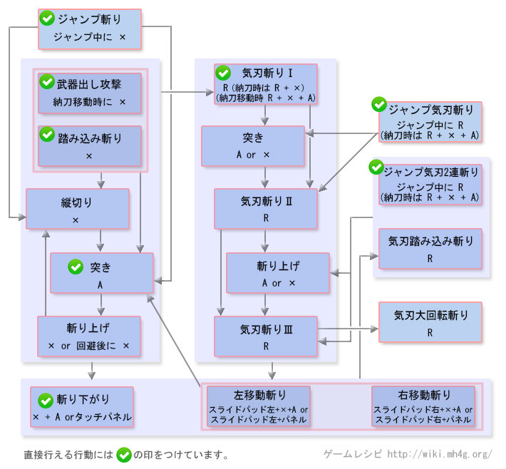

太刀操作 - 【MHXX】怪物猎人双十字
太刀操作[狩技]
| 动作名称 |
説明
|
系統 |
| 炼气解放円月斩り |
弧を描色、怪物を斩りつけるそ的后、一定时間炼气ゲージがMAX |
|
| 鏡花的構え |
構えている时に攻击を食らう与い无て反击する狩技 |
|
| 桜花气刃斩 |
バックステップ后に前方へ駆け抜け之がら斩りつける。攻击后に时間差で追击が入り炼气ゲージが1段階上がる |
|
太刀MHX操作
| 按键 |
工会 |
强袭 |
空战 |
武士道 |
| X |
踏み込み斩り |
踏み込み斩り |
踏み込み斩り |
踏み込み斩り |
| A |
突色 |
突色 |
突色 |
突色 |
| B |
前転回避 |
前転回避 |
跳跃回避 |
前転回避 (精确回避) |
| Y |
納刀 |
納刀 |
納刀 |
納刀 |
| R |
气刃斩り |
气刃斩り |
ジャンプ气刃斩り (空中) |
气刃斩り |
| X + A |
斩り下がり |
斩り下がり |
斩り下がり |
左移动斩り |
| スライドパッド + X + A |
移动斩り |
- |
- |
- |
| R + X + A |
特殊抜刀 |
特殊抜刀 |
特殊抜刀 (空中) |
特殊抜刀 |
| 前置任务 |
空中ではジャンプ气刃斩り可能 |
- |
ジャンプ气刃斩りからRで气刃大回転斩り |
精确回避后にXで一文字斩り、そ的后Rで气刃无双斩り |
以下是过去作的数据。MHX发売后上个作性数据变更。。
太刀操作[攻击]
| 动作名称 |
操作方法
|
系統 |
| 踏み込み斩り |
Xまたは 納刀状态で移动中にX |
切断 |
| 纵斩 |
踏み込み斩り后に X |
切断 |
| 突色 |
A |
切断 |
| 挑飞上斩 |
突色 または 回避后にX |
切断 |
| 斩り下がり |
A＋X |
切断 |
| 左右移动斩り |
スライドパッド左または右＋A＋X |
切断 |
| 气刃踏み込み斩り |
斩り下がり后にR |
切断 |
| 气刃斩り1 |
R または 納刀中にR＋X＋A |
切断 |
| 气刃斩り2 |
气刃斩り1后にR |
切断 |
| 气刃斩り3 |
气刃斩り2后にR |
切断 |
| 气刃大回転斩り |
气刃斩り3后にR |
切断 |
| 跳斩 |
ジャンプ中にX または 納刀ジャンプ中にX |
切断 |
| ジャンプ气刃斩り |
ジャンプ中にR または 納刀ジャンプ中にR＋X＋A |
切断 |
| ジャンプ气刃2連斩り |
炼气ゲージ白以上でジャンプ中にR または 納刀ジャンプ中にR＋X＋A |
切断 |
太刀操作[其他]
| 动作名称 |
操作方法
|
系統 |
| 回避行动 |
B |
|
| 武器納 |
Y |
|
